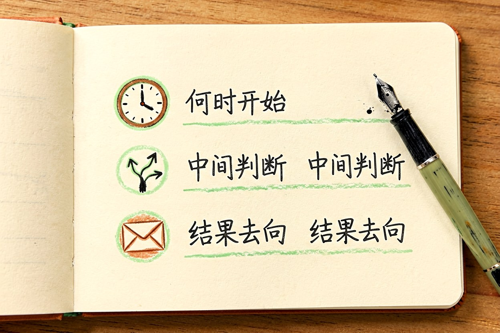
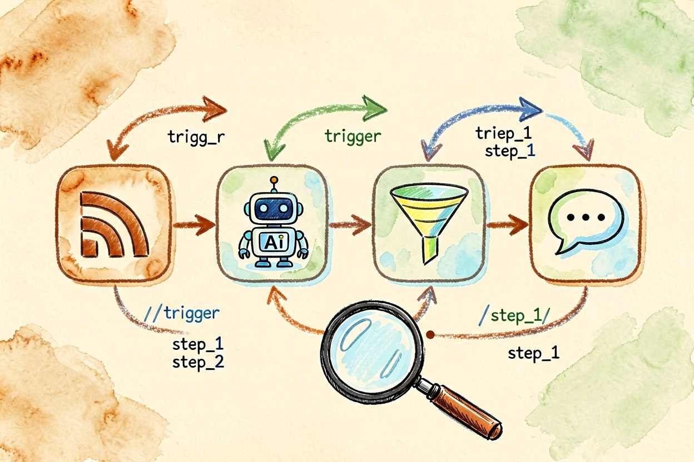
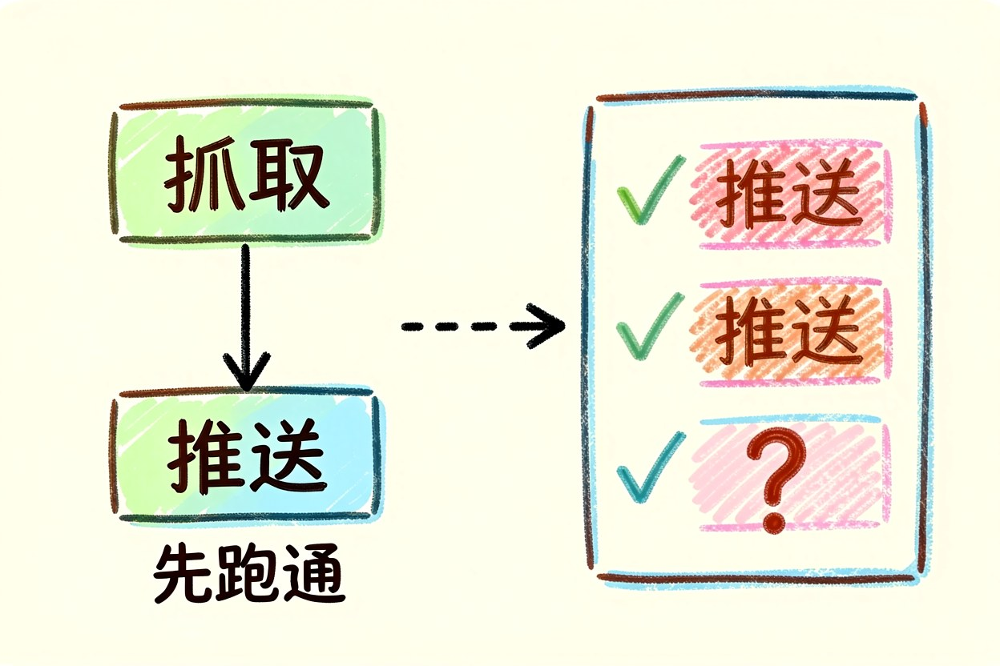
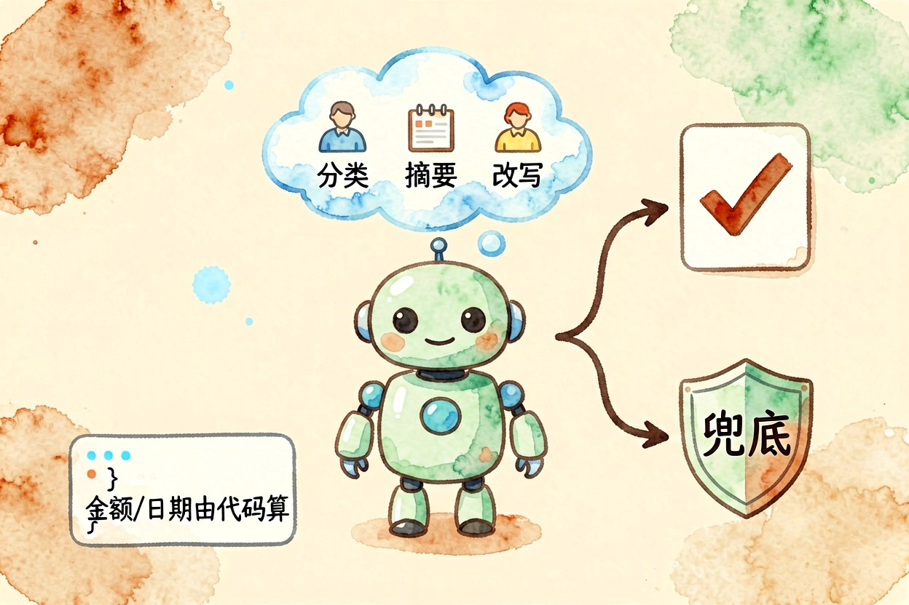
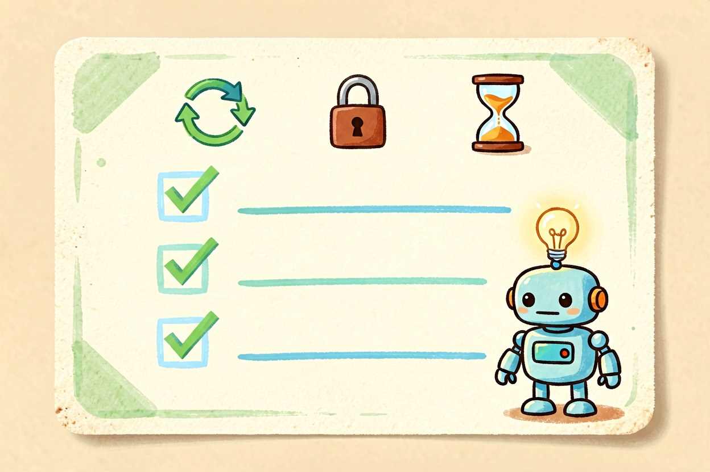
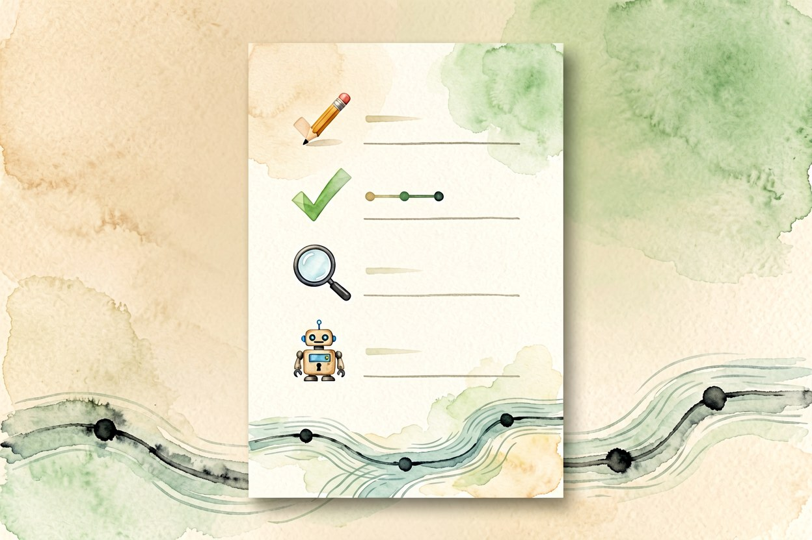

n8n 教程：把重复工作交给自动化流程
自动化真正的门槛不在工具，而在于你能否把手里那件重复事，拆成机器看得懂的几段。
n8n教程里最容易被跳过的一步，是把需求说清楚。多数人上手就跑去看节点列表，结果连了半天也对不上自己那件重复事。换个顺序：先写清触发条件、处理逻辑、输出目标，再进软件找对应的节点。
n8n教程第一课：先把重复的事说清楚

拿一张纸写三行：什么时候开始、中间要做什么判断、结果送到哪里去。比如"每天早上八点抓取行业资讯，按主题分类，把重要的发到工作群"。这三行写完，工作流的骨架就定了。凡是写不出这三行的任务，多半还不适合交给自动化，先手工做几遍再说。手工做过的事，才知道哪一步会出意外。所以先做几遍。
二、节点、连线与数据流

节点是动作，连线是数据流的方向。上游节点输出一段数据，下游节点把它当成输入。初学者最容易忽略的是数据结构：上一个节点吐出的可能是一整个列表，下一个节点却期待单条记录，于是循环或拆分节点就派上用场。抓取类任务的骨架大致是这样：
trigger: 定时任务 08:00
step_1: 抓取 RSS 列表
step_2: 逐条送入 AI 分类
step_3: 过滤出高优先级
step_4: 推送到工作群三、搭第一条能跑的工作流

别一上来就搭复杂流程。先用最长的那一段做验证：只做"抓取"加"推送"，跑通一次，确认数据能到手上。然后再插入分类和过滤。每加一个节点就跑一次，出问题容易定位。相反，一口气连十个节点再调试，报错时你根本不知道是哪一段把数据弄丢了。调试时把每一步的中间结果都打印出来，别只看最后一步。
四、把 AI 节点接进流程

分类、摘要、改写成固定格式，这三件事交给模型最划算。接的时候把输出格式写死，比如只允许返回几个固定标签之一，并给出兜底值。模型偶尔不守格式是常态，流程里要留一个判断分支接住它，而不是指望每次都对。涉及金额、日期这类字段，保持由代码节点计算，不要交给模型口算。
五、上线前要做的三件事

第一，加上失败重试和告警，任务挂掉时你要能第一时间知道。第二，把接口密钥放进凭据管理，不要写在节点配置里。第三，先让流程只做记录空跑几天，确认触发时间和数据量都符合预期，再打开真正的写操作。批量写入前先拿十条数据试跑一遍，比事后回滚省事。空跑这几天，别嫌慢。
n8n教程看到这里，最有价值的一步其实是挑任务：别拿涉及资金和客户隐私的流程做第一个实验，从资讯整理、文件归档这类低风险的事开始，跑顺了再往上加。工具本身不难，难的是每天真的愿意花十分钟维护它。

本文信息核对于 2026-09-14。AI 产品的价格、免费额度与功能变动频繁，实际以各工具官网当前说明为准。